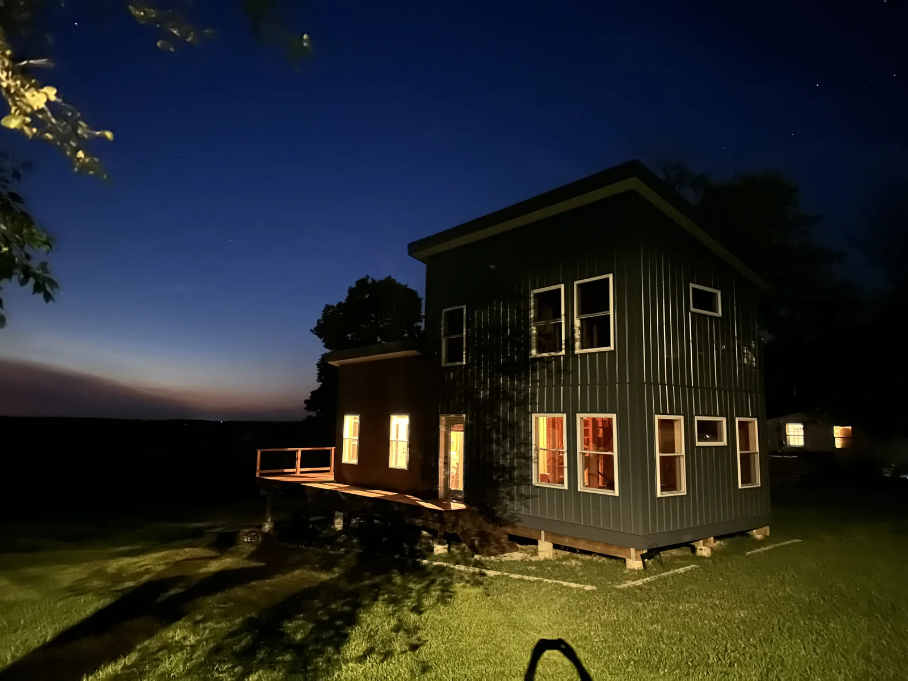

Physical
Katy Manor: Second Year (2024)
Year two of the house build brought finished siding, paint, a usable deck surface, real front stairs, and limited power inside the house.

Year two at Katy Manor was less about one dramatic transformation and more about making the house feel steadily more real.
The exterior moved from patched-together progress to something much closer to finished. We completed the siding, painted the fiber cement portions of the house, and got the deck surface down. The railing still had work ahead of it, but having a real surface to stand on changed the way the whole front of the house felt.
We also finally got real stairs up to the front door landing. That sounds small until you have spent enough time climbing temporary routes into your own unfinished house.
Inside, the electric panel went in and started providing limited power. It was not a fully finished interior, but lights and outlets mark a real psychological checkpoint. The house was still very much a project, but by the end of this stretch it was starting to behave like a place.